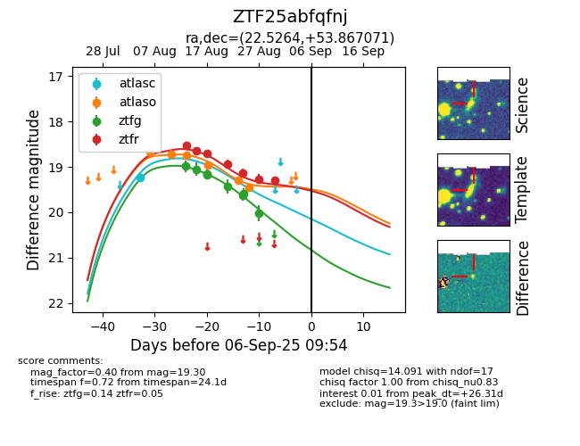

Target ZTF25abfqfnj at 2025-08-26 10:37, see:
FINK: fink-portal.org/ZTF25abfqfnj
Lasair: lasair-ztf.lsst.ac.uk/objects/ZTF25abfqfnj
ALeRCE: alerce.online/object/ZTF25abfqfnj
alt names
ZTF25abfqfnj (ztf,fink)
coordinates:
equatorial (ra, dec) = (22.5264,+53.86707)
galactic (l, b) = (128.6789,-8.57265)
photometry
last atlasc=19.24, atlaso=19.47, ztfg=19.58, ztfr=19.14
1 atlasc, 6 atlaso, 7 ztfg, 5 ztfr detections
